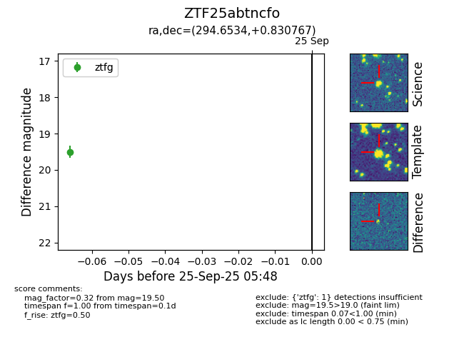

FINK: ZTF25abtncfo
Lasair: ZTF25abtncfo
ALeRCE: ZTF25abtncfo
ZTF25abtncfo (ztf,fink)
equatorial (ra, dec) = (294.6534,+0.83077)
galactic (l, b) = (39.1183,-10.09476)

last ztfg=19.50
1 ztfg detections